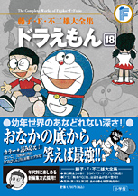

| |

＜幼稚園、よいこ、
てれびくん掲載集＞
定価：本体1,700円＋税
A5判／356ページ
幼年誌版を
オールカラーで収録！
さらに「てれびくん」
（付録版）をカップリング！
好評発売中！
★は初めて単行本に収録される
作品です。
※収録内容は変更になる
場合があります。

|
| ★ドラえもんがやってきた（幼稚園1970年1月号） |
| ロボットえんぴつ（幼稚園1970年2月号） |
| ケーキを育てよう（幼稚園1970年3月号） |
| ふしぎな道具で魚つり（幼稚園1970年4月号） |
| なんでもたまごに…（幼稚園1970年5月号） |
| 歯みがきで強くなろう（幼稚園1970年6月号） |
| ロボット足（幼稚園1970年7月号） |
| 絵の中で海水浴（幼稚園1970年8月号） |
| ゆうびんロボット（幼稚園1970年9月号） |
| せん用電車で行こう（幼稚園1970年10月号） |
| ジャンプゆみ（幼稚園1970年11月号） |
| ロボットを作ろう（幼稚園1970年12月号） |
| ふしぎなお絵かき（幼稚園1971年1月号） |
| 雲スキーと雲ぐつ（幼稚園1971年2月号） |
| じゃんけん箱（幼稚園1971年3月号） |
| ★遊園地になる木（幼稚園1972年10月号） |
| ★はりええほんドラえもん（幼稚園1973年3月号） |
| 早く大きくなあれ（幼稚園1973年4月号） |
| ★写したものを出すカメラ（幼稚園1973年5月号） |
| ★変身セットでヒーローに（幼稚園1973年6月号） |
| ★雪を作れる機械（幼稚園1973年7月号） |
| ドラミおおはりきり（幼稚園1973年8月号） |
| ★へんなすいぞくかん（幼稚園1973年9月号） |
| ★らくがきを消すガス（幼稚園1973年10月号） |
| ひとりで遊べる道具（幼稚園1973年11月号） |
| しょうぼうしゃ（幼稚園1973年12月号） |
| ★ドラえもんあげる（よいこ1970年1月号） |
| ★ひっぱると消えるしっぽ（よいこ1970年2月号） |
| ペタンコになって遊ぼう（よいこ1970年3月号） |
| ★すいこむ糸電話（よいこ1970年4月号） |
| テレビからお客さま（よいこ1970年5月号） |
| ★パトロールカー（よいこ1970年6月号） |
| ★ふしぎなかがみ（よいこ1970年7月号） |
|
| ★空とぶ動物園（よいこ1970年8月号） |
| ★花火のたね（よいこ1970年9月号） |
| ★風のロケット（よいこ1970年10月号） |
★なんでも大きくなるライト
（よいこ1970年11月号） |
| マジックチャック（よいこ1970年12月号） |
| もちつきロボット（よいこ1971年1月号） |
| なんでもロープ（よいこ1971年2月号） |
| いま、なん時？（よいこ1971年3月号） |
| ★空気クレヨンで大さわぎ（よいこ1971年4月号） |
| ★なんでもツリー（よいこ1972年10月号） |
★着たまませんたくできるスプレー
（よいこ1972年11月号） |
| ロボットのおに（よいこ1973年2月号） |
| 手ぶくろですな遊び（よいこ1973年3月号） |
| ★花さか灰そうどう（よいこ1973年4月号） |
| 鳥とり機（よいこ1973年5月号） |
| ★パトカー（よいこ1973年6月号） |
| ★風船で海水浴（よいこ1973年7月号） |
| ★うでクーラー（よいこ1973年8月号） |
| ★雨そうじ機（よいこ1973年9月号） |
★ネコみたいになるえさ
（よいこ1973年10月号） |
★もしもボックスで昼ふかし!?
（てれびくん1976年12月号 別冊付録） |
| 無人島へ家出（てれびくん1977年1月号 別冊付録） |
| 悪の道を進め！（てれびくん1977年2月号 別冊付録） |
宝さがしごっこセット
（てれびくん1977年3月号 別冊付録） |
| あやとり世界（てれびくん1977年4月号 別冊付録） |
★分解ドライバー
（てれびくん1977年6月号 別冊付録） |
★ターザンパンツで大活躍!?
（てれびくん1977年8月号 別冊付録） |
|